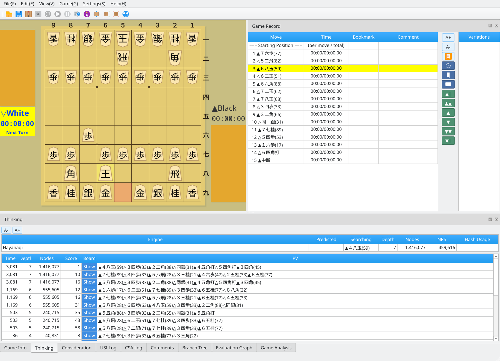
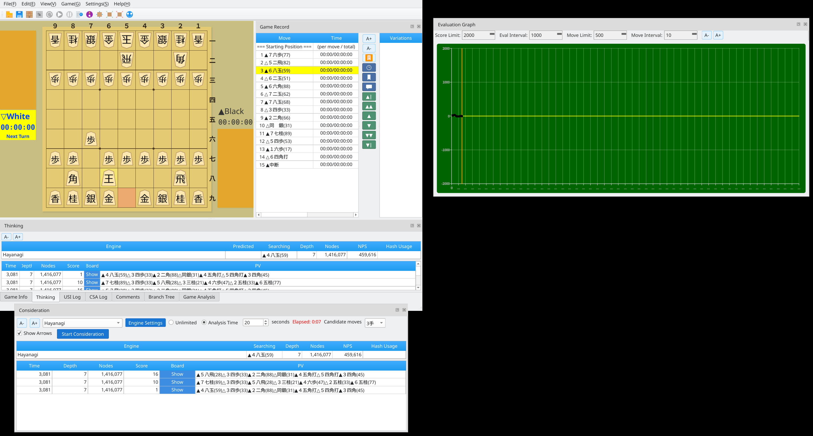

Arrange panels freely to customize your layout
Screenshots were captured on Linux with the English interface.
Keep all panels together in the main window
Dock the game record, engine information, evaluation graph, and other panels inside the main window to view everything at once. Drag a panel's title bar to move it to the top, bottom, left, or right.

Docked layout: game record, engine information, and evaluation graph in one window
Arrange panels as independent windows
Drag a panel's title bar outside the main window to make it a separate floating window. With multiple monitors, you can place panels on different screens to use the extra workspace.

Floating layout: arrange each panel as an independent window